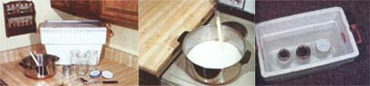

Do you dislike the taste of commercial yogurt (also sometimes spelled yoghurt)? You know, the "plain" varieties are too acid, while the flavored mixes are too sweet. Are you irritated by the high prices commonly charged for dinky little cartons of the creamy food? Have you wondered about making yogurt ... but decided that you didn't want to buy another electric appliance or put yourself through a complicated cooking chore?
Well, don't give up! You don't have to buy commercial yogurt, and you darn sure don't need a storebought appliance to make your own! I know: I've been making and enjoying a gallon of inexpensive, mild, and healthy yogurt every four or five days for more than six years! And you can do the same - easily and successfully - even if you're not a whiz in the kitchen. (For that matter, even if you're one of the original old hands at yogurt making, keep reading, you may still learn a trick or two.)
YOGURT NUTRITION AND HEALTH
Before I tell you how to make yogurt at home, let me share the many health-related reasons for eating the ancient Middle Eastern food in the first place. Or rather in the second place ... The primary reason for eating homemade yogurt is that the creamy treat tastes great! The story begins with the tiny organisms that convert milk to yogurt: primarily varieties of lactobacillus bacteria. The friendly little cusses like to set up a living factory in your digestive system and continuously produce an onslaught of B vitamins, which can help combat nervous disorders, mental and physical fatigue, anemia, skin rashes, and more.
The lactobacilli thrive - and make yogurt - by converting milk sugar (lactose) into lactic acid. Lactic acid produces yet another of yogurt's amazing health benefits: The toxic bacteria that cause intestinal gas and putrefaction (the rotting decomposition of food) cannot survive in an environment containing significant amounts of lactic acid. The resulting lack of toxic organisms in the metabolism may be one reason for the long and vigorous lives of the people in yogurt-loving societies.
This double whammy effect of lactobacilli - creating good vitamins while eliminating bad bacteria - is especially helpful after someone has taken antibiotics. The germ-killing medicines may successfully combat an unwanted disease, but they also tend to wipe out the body's supply of internal lactobacilli and leave the treated patient susceptible to B-deficiency and intestinal problems. Therefore, sick folk (especially "bugridden" infants) should be given yogurt as an important health-restoring food.
On top of all of its positive effects, the fermented milk product is a digestive aid that helps the body absorb protein, calcium and iron. In fact, many people who literally can't stomach fresh milk (the lactose present in the drink gives lactose intolerant people gas, diarrhea and other problems) can easily assimilate the healthful lactic acid found in yogurt.
GETTING READY TO MAKE YOGURT (YOGHURT)
The first step in making yogurt is to gather your equipment and ingredients. You'll need some jars with lids (any clean glass containers will work fine), a large waterbath vessel for keeping your brewing batch warm - either a picnic cooler or a canning pot you can wrap with heavy towels - and standard kitchen equipment, including a measuring cup, cooking pan and stirring utensil. A food thermometer can come in handy, too, but if you don't have one around, you can "guesstimate" the crucial temperature limits of 100 degrees Fahrenheit and 115 degrees by dabbing some heated water on your inner wrist. Liquid at 100 degrees feels comfortably warm to the touch, but at 115 degrees there's a bit of a sting.
Your cooking ingredients will be either skim or whole fresh milk, a bit of honey (the sweetener is optional), and your yogurt starter. The starter can be either some fresh (unflavored) yogurt - a good quality commercial brand, made without gelatins and fillers and containing live cultures; Or you can use a package of freeze-dried yogurt culture. You can get the special packets from health food stores and some drugstores, or by mail from specialty and home brew shops that sell cheesemaking cultures. Each yogurt culture will produce a differently flavored food, so experiment!
CHEAP AND EASY YOGURT RECIPE
Start with clean yougrt-making equipment to eliminate any unwanted microscopic critters. The yogurt recipe here produces one quart of finished yogurt, but you can make any amount you wish by proportionally raising or lowering the various quantities.
Start by drizzling two to four teaspoons of honey around the bottom of a two-quart cooking pot to sweeten the culture and also help prevent "milk burn" on the metal vessel. (If you'd rather not add sweetener, you can eliminate this step.) However, don't incubate yogurt with honey if you have trouble digesting lactose, because in that case you'll want to ensure that the only sugar the lactobacilli can consume comes from the milk.
Next pour in 4 1/2 cups of milk, cover the pan with a dark lid (to help retain vitamins), and slowly heat the liquid until a skin - with bubbles trapped underneath - forms on top of the milk. This bacteria-killing step should take about 25 to 35 minutes. If you are using a thermometer, you can stir the milk if you like, and let it get up to about 180 degrees. Let the milk hold its temperature a few minutes, and then cool it - quickly or slowly - to around 115 degrees.
You're now ready to stir in either your starter packet or one tablespoon of fresh yogurt that contains live cultures (check the package). Some folks will also add a couple tablespoons of powdered milk to thicken the yogurt's texture at this stage, but it is not necessary. Now pour the warm liquid into your cleaned jars (or 1 large jar), screw on the lids, set them in your water bath canner or cooler, and pour 115-degree water into the large container until the levels of the milk and water are equal. Then seal this incubator and let the yogurt incubate. If you're using a canner, it's best to wrap warm dry towels around it. You may also prefer to use a yogurt maker that uses electricity or batteries to hold the temperature, but it isn't necessary.
The trick is to keep your yogurt hatchery warm and undisturbed for a few hours, and people have devised ingenious ways to accomplish this. Some folks with gas-powered stoves will place their yogurt kettle in the oven and let the pilot light keep it warm. Others with electric stoves will put the culture container in the oven anyway, but heat the batch with an electric light bulb on an extension cord, or by replacing the appliance's small inside light with a 100-watt bulb. Then again, other people place their incubating yogurt in an airtight pressure cooker and set the pot at an experimentally determined appropriate distance from a woodstove or other constant source of warmth. On a sunny day, you can even drape your yogurt container with black material, stick the whole thing outside, and make yogurt with solar power! (I just keep the water bath above 100 degrees by occasionally substituting boiling water for some of the cooled liquid.
We've found our own quality - and quantity - yogurt maker in a fish tank! All we did was buy a standard 50-watt tropical fish aquarium heater (for approximately $5) from a local variety store. We then cut a wooden 1-by-1-inch board to fit snugly in the "middle top" of our big kitchen canner, and fastened the water warmer securely to this cross brace. Next, we filled the canner with a 115-degree bath, and six pint jars of inoculated milk, plugged in the heater (we had to fiddle with the thermostat dial a little to figure out that perfect 110-to-115-degree setting), put the lid on the canner, covered the kettle with a thick blanket, and left the whole thing alone for a few hours.
The result? Our aquarium-heater-controlled incubation chamber kept the water bath and the growing culture at a constant temperature, and we got quarts of thick, creamy yogurt. And we've made "fishy yogurt" ever since, because our technique works every time.
After the yogurt has had time to start coagulating, tip a jar gently to see how firm or liquidy it is. Then, once the yogurt reaches your desired thickness (could take up to 12 hours or so), refrigerate the finished yogurt. The refrigerated culture will continue to thicken and gradually, but at a much slower rate than warm yogurt will. Yogurt is "thermophilic," meaning it ferments well at warm temperatures.
CHAIN YOGURTING
You don't have to buy more starter to make your second - and succeeding - batches of yogurt. Just save a tablespoon or two from one culture to inoculate the next batch of milk. You should, however, start the next round within two to five days, or (if you can't meet the deadline) simply freeze some fresh yogurt and thaw the iced culture when you're ready to brew again.
The first batch from your original starter will firm up in anywhere from four to twelve hours (most likely in around six to eight hours), but subsequent rounds will set ever more rapidly - and taste ever more tangy - until you finally have to give up on that "chain" and buy yourself some new starter.
One clever way to delay even an occasional starter-shopping expenditure - as well as to ensure that every batch of yogurt will have a uniform beginning - is simply to freeze (in ice cube trays) a quantity of yogurt from your original starter. You can then store the accumulated yogurt blocks in your freezer, and thaw one or two cubes whenever you need a new starter.
MAKING YOGURT: TROUBLESHOOTING TIPS
Like many novice yogurtmakers, you may find that it takes a couple of tries to get a feel for fixing your own dairy food. In such a case you'll become an experienced bacteria breeder all the sooner if you learn from any initial mishaps. So, to help you understand such educational experiences (or better yet, avoid them altogether), here's a Yogurt Maker's Troubleshooting Guide:
* Are you a novice in the kitchen? Then be forewarned that a pot of innocent bubbling milk can swiftly turn into a raging, lid-lifting mess. And know that a hard-to-clean layer of scorched milk will coat the bottom of your cooking pan if you heat the milk too quickly.
* Did you successfully complete the yogurt cooking process but find that a thick coat of cream rose to the top of your yogurt? This outcome, which might occur if you're using nonhomogenized milk, can be prevented if you hasten the setting process by using less milk and also make sure the inoculated milk stays at its optimum cooking temperature.
* Did your yogurt separate into lumpy curds and watery whey? You probably let the milk get joggled around too much. It's perfectly fine to eat this way, but you can remedy the problem by stirring the whey back into your curds. Better still, turn the accident into an achievement: Strain the loose glop through a cheesecloth for bowlful of delicious yogurt cheese (called labneh). See also: Easy Cheesy: 4 Super-Simple Recipes
* What's that? Your batch didn't set at all? Well, such a calamity can have several causes. Your starter may have been too old. Perhaps you forgot to add the starter culture (you wouldn't be the first person to make this mistake!) You may have let the batch ferment for too short a time or at too high or low a temperature. Or the animals that your milk came from may have been treated with antibiotics, and the antibiotic traces could have wiped out the lactobacilli.
* Does your finished batch have an off flavor? Most likely, the problem is that some mold or foreign bacteria got into the incubator (probably from unclean equipment), or the milk wasn't heated enough initially to kill the liquid's natural microorganisms. In either case, don't use the strange batch.
SERVING YOUR FINISHED YOGURT
Yogurt is a versatile food that can be served at any meal, eaten as a quick snack, or slurped plain for a stomach-soothing evening sleep inducer. For family meals, yogurt can be mixed with apple or cranberry sauce and topped with granola and sesame seeds. Or you can use yogurt in salad dressings, for making dips and spreads, in bread, soups and casseroles or as a tasty sundae, by topping a batch of yogurt with some frozen juice concentrate and nuts. Be aware that any cooking that heats the yogurt up to more than 120 degrees will kill the live bacteria, but it's still OK to eat.
The uses of yogurt are limited only by your imagination. So to provide a little "starter culture" for your own culinary brainstorms, I'll share one of my favorite recipes: Grape Yogurt Sherbet.
To make this ice-creamy dish, beat together three cups of fresh yogurt with the thawed contents of one 6-ounce can of grape juice concentrate. If you wish, you can also drizzle in two tablespoons of honey. Then stir in two teaspoons of vanilla extract, and place the violet-hued concoction, set in a shallow pan, in your freezer. When the mixture starts to get mushy, scrape the half-frozen dessert into a bowl, quickly whip it with a chilled beater until it's smooth, and finish the freezing process. Then dig into a great yogurt dessert!
And there you have it. Yogurt is a unique living food that will boost both your health and your energy and can easily - and economically - be made at home. Try it. You may find that those tangy bacteria will add a lot to your life!
See also:
* Yogurt
* You Can Make Yogurt at Home
* How to Make Your Own Yogurt, Kefir, Chevre
* Feast on Frozen Yogurt
* Make Your Own Yogurt Maker
|
Versatile yogurt makes a tasty and healthy treat served plain, with fruit, in dips, or in lots of other delicious recipes. |
 Left : You can make yogurt at home using ordinary cooking equipment. Center: Milk is heated to kill off any unwanted bacterial cultures, and then cooled to around 115 degrees Fahrenheit. Right : After mixing a tablespoon of fresh yogurt starter culture into each jar of milk, the inoculated mixture is set in a 115-degree water-filled incubation chamber. |
Everybody loves yummy tangy yogurt! |